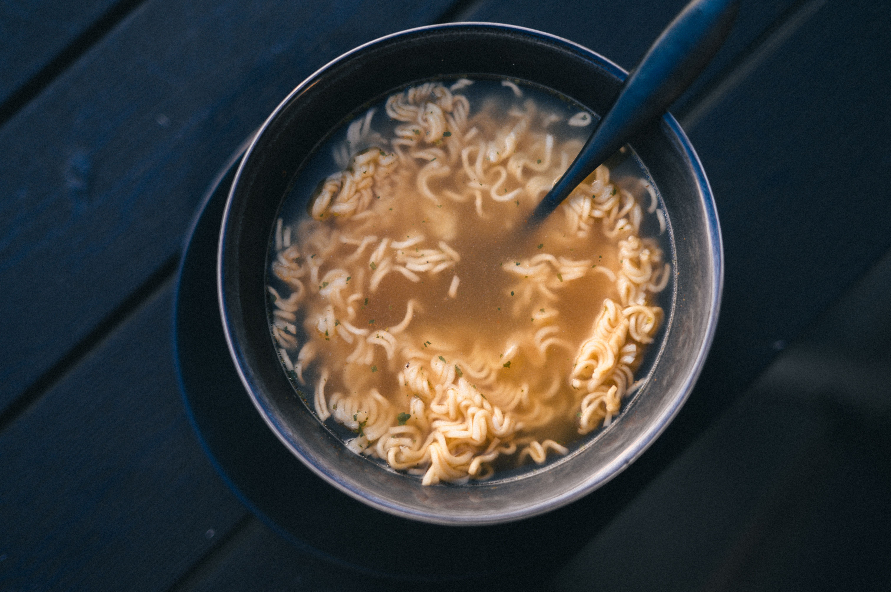

Pour 2 cups of water into a small pot and bring it to a rolling boil over high heat.
Drop the dry noodle block into the boiling water.
Empty the soup base and vegetable packets into the water.
Simmer for 2 to 3 minutes, stirring occasionally so the noodles separate and soften evenly.
Remove from heat, pour into a bowl, and let cool slightly before eating.